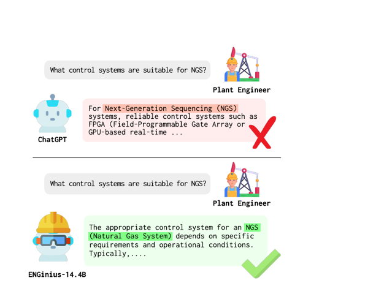
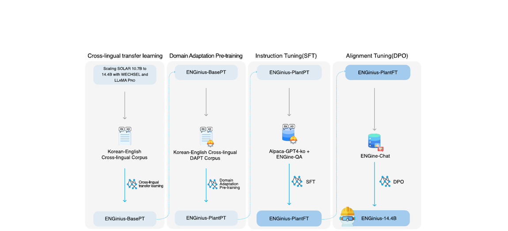

한줄 요약
ACL 2025 Industry Track에서 발표된 플랜트 건설 엔지니어링 도메인에 최적화된 한국어-영어 이중 언어 대규모 언어 모델. 범용 LLM과 산업 엔지니어링의 도메인 특화 요구 사이의 격차를 해소합니다.

Figure 1. 일반 LLM(위)은 도메인 특화 용어와 지식에 어려움을 겪습니다. ENGinius(아래)는 플랜트 건설 엔지니어링에 최적화된 응답을 제공합니다.
핵심 내용
- 플랜트 건설 엔지니어링을 위한 도메인 특화 최적화
- 다국어 산업 응용을 위한 이중 언어(한국어-영어) 지원
- 실제 적용 가능성을 입증한 Industry Track 논문

Figure 2. ENGinius 학습 절차: (1) WECHSEL과 LLaMA PRO를 통한 기본 모델 확장, (2) 도메인 적응 사전학습, (3) 명령어 튜닝, (4) DPO 정렬을 거쳐 ENGinius-14.4B를 생성합니다.